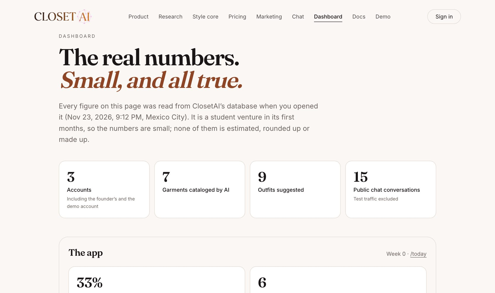

4 · Why it’s smart · digital commerce
It’s a smart business because the AI is very cheap to run: one chat answer costs us two hundredths of a cent, and all the AI since August cost less than one dollar. The only expensive feature, the virtual try-on, is paid with credits, so even if a customer uses all 30 credits, they cost us at most 2.25 dollars.

Pestaña 3closetai.lat/dashboardLos números reales. Baja un poco hasta “What the AI has cost” si quieres mostrar el costo.
It integrates digital commerce in three ways: payments through Stripe, credits inside the app, and links from every suggested garment to real stores — Mango, H&M and Liverpool.
And it’s built with guardrails: it never talks about diets or weight, and a person reviews what it refuses. Five external users tested it, all scored it five out of five, and the two newest said they would use it.

Pestaña 4closetai.lat/chatEl outfit que preparaste antes, con sus fotos y los botones Mango, H&M y Liverpool.